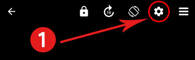
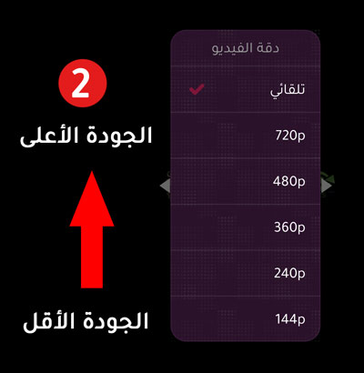

يمكنك اختيار جودة الفيديو أثناء المشاهدة على المشغل الأول
اختار جودة منخفضة إذا كانت سرعة الانترنت لديك ضعيفة أو إذا كنت تستخدم بيانات الهاتف ولا تريد صرف الكثير، أو إذا حدث تقطيع في الفيديو
كما في الصورة..


أحياناً قد تتوفر جودة واحدة فقط (مثلاً 480) في هذه الحالة جرب من مصدر مختلف